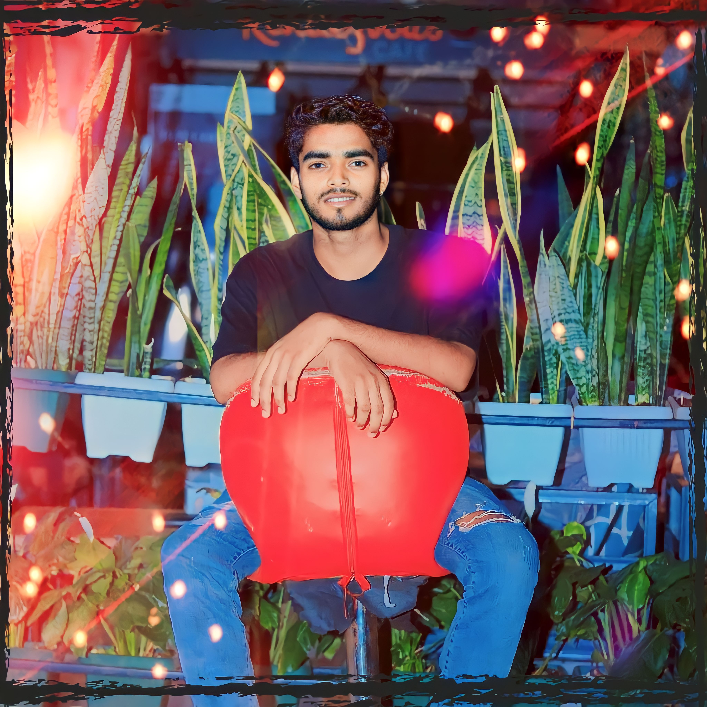
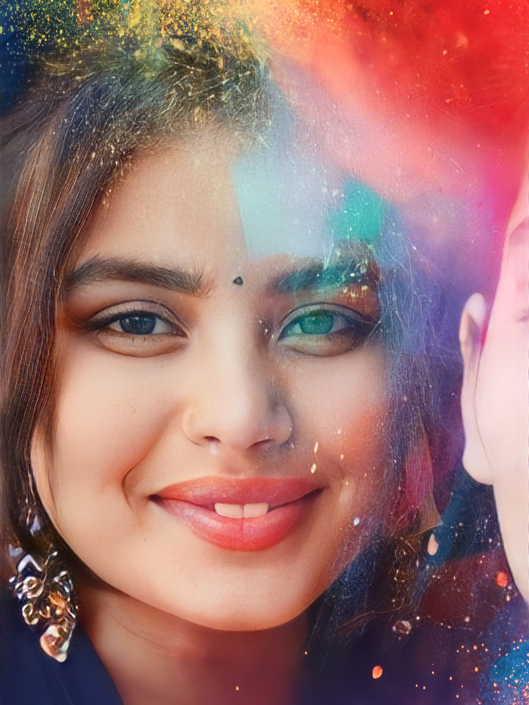
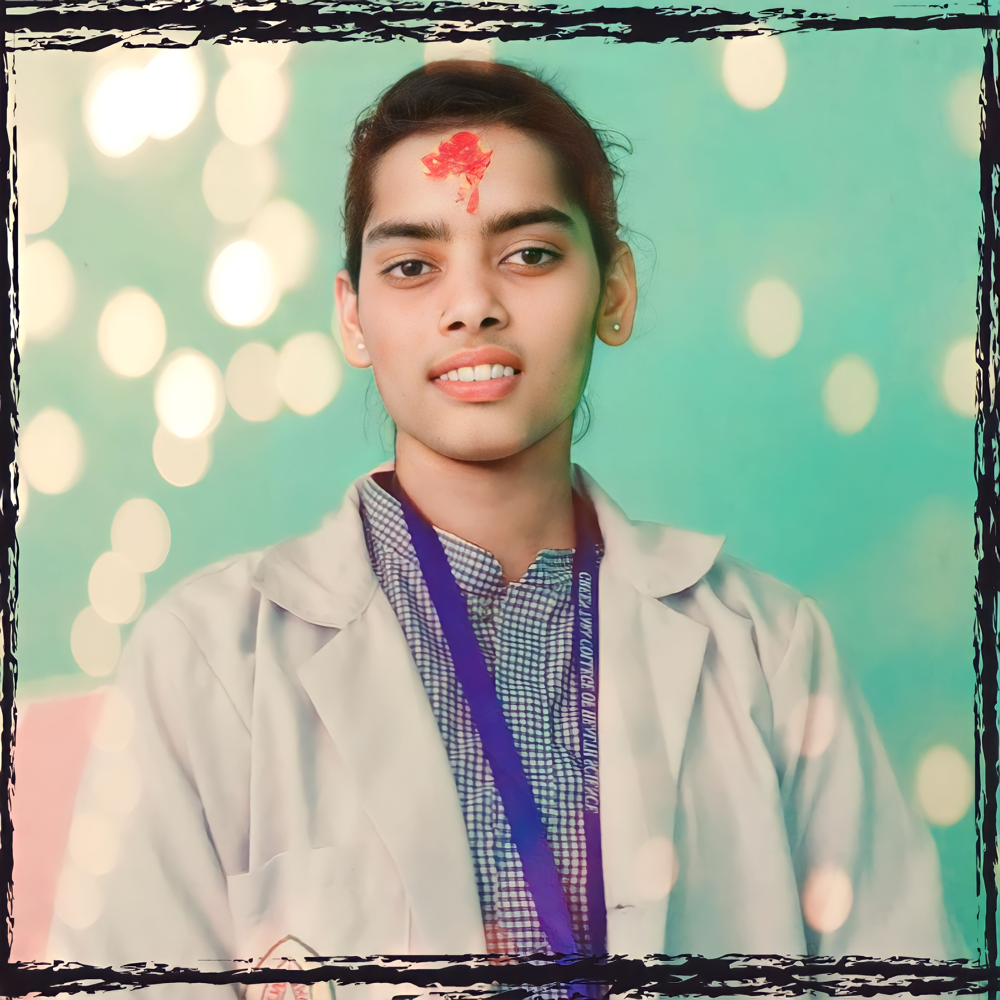

Jasim is not only my friend. He is my heart. He is my bestfriend a bestfriend is one of the most preclagifts of god in this world. we are know to each other in our childhood. But we are gets in bestfriend on 6th class in Everest Nepal English Boarding School. Jasim is my special friend who helps me every good or bad situation like a big brother.i really love him, he also too me. one special things in jasim is that he never attends his school , mairrage party, Birthday party...etc etc in time. he always lete that's the reason we always punished with our classteacher in our school life. but thar's punished is amzing i always missed that's days. a person's bestfriend is the closest and most special person in that person's life. a bestfriends is someone with whom we share all of the most important and crucial things in our life. know a days he lives in kathmandu for his studies . i really miss him and love you so much my darling.......
Friendship is a precious bond that enriches our lives with love, support, and companionship. Throughout our journey, we encounter numerous individuals, but only a few leave a lasting impression. Munesh Yadav, my best friend, is one such remarkable person. Munesh Yadav, at the age of 18, has already established himself as a brilliant student. His consistent hard work and dedication have earned him the title of class topper. Munesh's intellectual prowess inspires me to strive for excellence in my studies as well.One intriguing aspect of Munesh's personality is his strict adherence to vegetarianism. His friends jokingly refer to him as "Sadhu Baba" due to his dietary choices. Munesh's commitment to this lifestyle demonstrates his deep respect for all living beings and his strong moral values.Munesh has a remarkable ability to maintain composure in the face of adversity. Despite facing numerous challenges due to his family's financial struggles, he never allows his circumstances to define him. Munesh's resilience inspires me to approach life's obstacles with courage and determination.Currently, Munesh has taken up the noble profession of teaching in Janakpurdham. His passion for education and his desire to make a positive impact on the lives of others have led him to pursue this path. I am immensely proud of his decision and confident that he will excel in this role.Munesh Yadav is not just a friend but a guiding light in my life. His academic excellence, unwavering love, commitment to his values, resilience in the face of adversity, and selfless nature make him an exceptional individual. I am grateful for his presence in my life, and his absence is deeply felt when we are apart. The memories we share and the experiences we've had will forever be cherished. Munesh Yadav is an epitome of friendship, and I am truly fortunate to call him my best friend.

Roshan Yadav is not only a dear friend but also a genuinely lovely person. From the moment I met him, his warm smile and friendly demeanor made me feel welcomed and valued. His charming personality is infectious, leaving a lasting impact on those who have the privilege of knowing him. Roshan's positive attitude towards life radiates, making him a beacon of joy for everyone around him.One of the defining qualities of Roshan is his unwavering support. Regardless of the situation, he has always been by my side, offering a helping hand whenever I needed it the most. His caring nature is selfless, and he goes above and beyond to ensure that those he cares about are happy and content. Whether it's a personal problem or an academic challenge, Roshan's presence brings a sense of reassurance and comfort.Roshan Yadav hails from a respectable and loving family. Growing up in a nurturing environment, he has imbibed values such as integrity, compassion, and humility. These qualities are reflected in his interactions with others, as he treats everyone with respect and kindness. Roshan's family has undoubtedly played a significant role in shaping his character, fostering his empathetic nature and his ability to connect with people effortlessly.Roshan's dedication to his education is commendable. Currently studying hotel management in Kathmandu, he is passionate about his chosen field. His ambition and drive to excel are evident in his academic pursuits. Roshan's thirst for knowledge and eagerness to learn inspire those around him to strive for greatness. Despite the demands of his studies, he still manages to be an excellent friend, which is a testament to his time management skills and commitment.Roshan Yadav is more than just a friend; he is a constant source of love, support, and happiness in my life. His delightful personality, unwavering support, and charismatic nature make him a cherished companion. Roshan's dedication to his studies, coupled with his ability to connect with others, sets him apart as a remarkable individual. The impact he has on those around him is profound, leaving an indelible mark on their hearts. As I reflect upon our friendship, I am filled with gratitude for the incredible person that Roshan is, and I eagerly await the moments we share together in the future.

Sahana is very cute girl like a ice-cream, just Kidding. she is a very beautiful girl and brilliant in studies, specially her handwriting is OMG so super that's the reason i always to say to her to do my homework, & complet my note.we are meet to each other in our class 5. we are good friends from the childhood and still continue.... ( from my side i don't know she still continue or not). she is very entertaining, jolly and helpful in nature and loved by everyone such as my parents, my class teacher, my neighbours etc. sahana always promotes me to write well tooo. she is one of the ideal students of my class. she is very punctual and come to the school at right time. sahana always completes her task timely and regularly as well as helps me too. she keeps her books and copies very clean. sahana is my good friend and cares for me a lot i have so many shared memories and experiences that bring us even closer together. Know a days she lives in saphi with her husband mr.Najibul rahman , todays we are not connect to each other . I always miss her.

Friendships are an integral part of our lives, and sometimes we come across individuals who leave a lasting impact on us. In my case, that person is Rabina Yadav. From her exceptional academic prowess to her unwavering support and infectious sense of humor, Rabina is a remarkable friend. Rabina Yadav, an 18-year-old girl, was born in Kamala municipality 03. Although her birthdate falls on the 26th of Aashad, she celebrates it on the 26th of Poush, Rabina's commitment to her studies is commendable. She consistently achieves exceptional results and excels in various subjects. Currently, Rabina resides in Kathmandu, where she pursues her education in Student Health Assistance (HA). This field aligns perfectly with her compassionate nature and desire to make a positive impact on people's lives. Her decision to study HA demonstrates her selflessness and willingness to contribute to society.One of the qualities that sets Rabina apart is her ability to motivate others. Her encouraging words and unwavering support have been instrumental in helping me overcome challenges. Rabina also stands out as a leader. She takes charge and organizes activities for our group, Rabina is always there to support her friends, lending a helping hand whenever needed.Rabina Yadav is not just a friend but a source of inspiration, joy, and strength. Her cute appearance, beautiful smile, and humorous nature make her a unique and cherished individual. She brings light, joy, and laughter into my life, making every moment we spend together memorable. The memories we have shared will always be cherished, and I eagerly look forward to the moments we will create together in the future.

My friend Sipesh Yadav is an 18-year-old with a body built like a bouncer. He has a great appetite and enjoys eating food in a lovely manner. One of his prominent qualities is his incredible sense of humor; he is always cracking jokes and making everyone laugh. He takes good care of me and is always there for me when I need him. He is an avid bike rider and his love for riding is evident from his Facebook account, where he goes by the name "Rider Bhai." Surprisingly, he rarely attends school, but he never misses a chance to invite me for a party, even if there's no particular reason. Despite his jovial nature, I saw him cry once due to a family problem, which made me realize his vulnerable side. He has a dislike for girls because one of them referred to him as "bhaiya" or brother, perhaps diminishing his chances for romantic involvement. Currently, he is studying commerce at Model Multiple in Janakpur. I genuinely miss him and our times together.One of the most endearing qualities of Sipesh is his ability to bring joy and laughter to any situation. His humor is contagious, and he never fails to lighten the mood with his witty remarks and comical anecdotes. No matter the time or place, Sipesh's quick wit and playful nature make every moment spent with him a memorable one.Sipesh Yadav is a friend who consistently goes above and beyond to take care of those around him. He has been a pillar of support in my life, offering a listening ear and valuable advice whenever I needed it. Sipesh's genuine concern for my well-being has been instrumental in our friendship, creating a bond built on trust and understanding. I really missed him. Love you bhai....